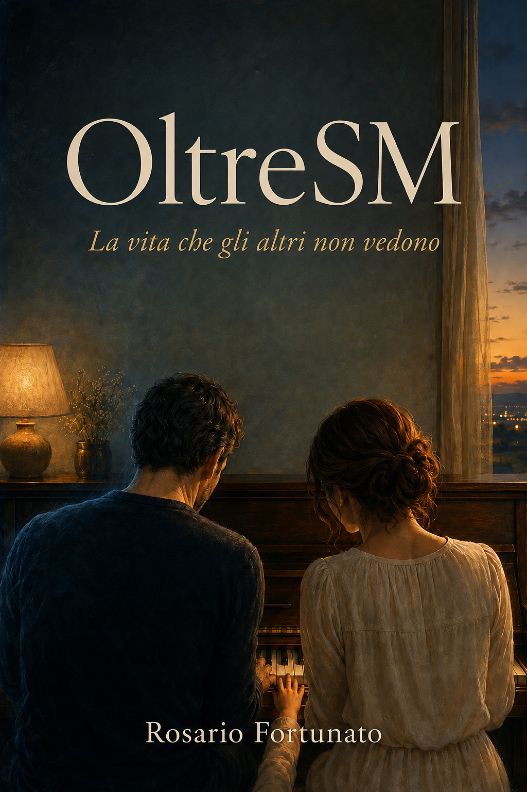

Una storia vera
Oltre la SM c’è la persona.
Un viaggio attraverso la diagnosi, la paura, la fatica invisibile e la forza di continuare a vivere, amare e progettare il futuro.
Acquista su Amazon
Il libro
Una diagnosi non racconta tutta una persona
OltreSM racconta cosa significa convivere con una malattia che spesso gli altri non riescono a vedere. È una testimonianza sincera sulla diagnosi, sulla paura, sulla fatica invisibile e sulla forza di continuare a vivere.
“Non è soltanto un libro sulla malattia. È la storia della persona che continua a vivere oltre la diagnosi.”
Un libro dedicato a chi:
- convive con una malattia cronica o invisibile;
- sta accanto a una persona che affronta ogni giorno la malattia;
- vuole comprendere ciò che spesso non si riesce a spiegare;
- ha bisogno di ritrovare speranza dopo una diagnosi.
OltreSM è disponibile su Amazon
Acquista la tua copia e scopri la persona che continua a vivere
oltre la diagnosi.
L’autore
Rosario Fortunato
Ho scelto di raccontare la mia esperienza perché dietro ogni diagnosi esiste una persona, con sogni, paure, relazioni e progetti ancora da realizzare.